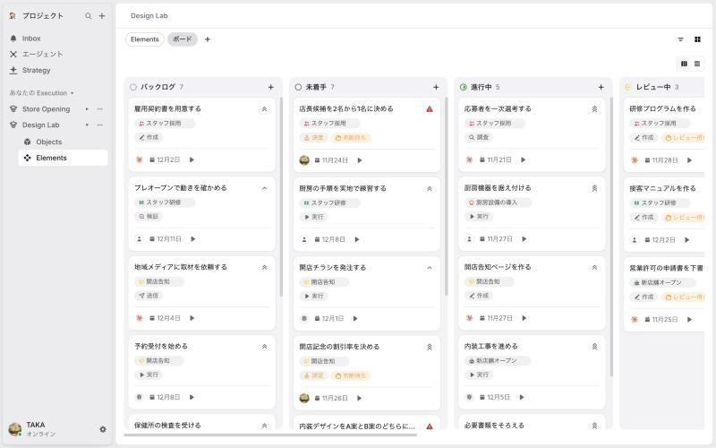

目標を決めたら、最後の一歩まで追える。
Strategyで目指す姿と成功条件を決めると、AIが前提を確かめながらObjectとElementの計画に分けます。人が確かめてから動き出します。
- Strategyを書く目的、前提、決めたこと、成功条件
- 計画にするAIが会話で前提を確かめ、ObjectとElementに分ける
- 人が確かめる計画は、確かめてから動き出す
- 最後まで追う進み具合と期日、Strategyとのずれ


3つの層で、目標と行動をつなぐ。
どのElementも、何のためにあるかをたどれます。
Strategy何を達成し、どう勝つか
目的、前提、決めたこと、成功条件。入れ子にでき、最上位がSpaceの目指す姿になる。
ObjectElementをまとめる持ち場
プロジェクトに近い単位。期限、リーダー、進み具合、マイルストーンを持つ。
Element行動の最小単位
「調べる」「作る」「承認する」のように動詞を持つ。判断・決定・承認・回答は人だけが担う。
途中で、いまどこにいるかが見える。
- 進み具合の帯
- 期日に対して余裕が減ると、帯の先端から赤くなる。
- 履歴の線
- 承認待ちの作業は枝になり、承認されると本線に戻る。
- マイルストーン
- ひし形が、期日までの作業の進み具合で塗られていく。
- Status
- ObjectとStrategyは5つの段階のどこにあるかを持ち、段階ごとに独自のStatusを足せる。
- なぜやるか
- Elementから、根拠になった成功条件や決めたことに戻れる。
- ずれを知らせる
- Strategyが変わると、影響を受けるElementが分かる。